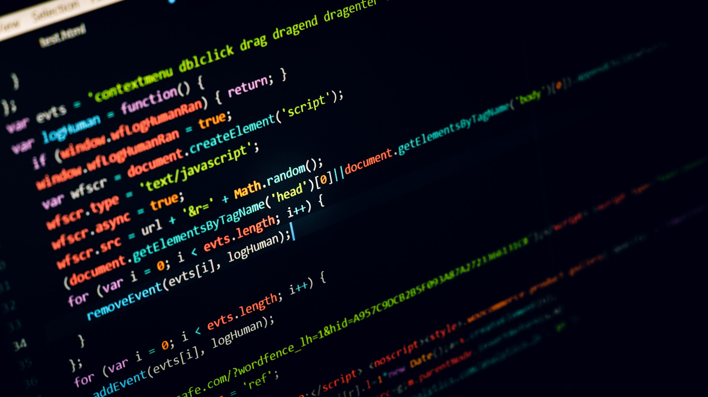

Waarom HBO-ICT bij mij past?
De opleiding past bij mij vanwege de volgende reden.
- Ik vind het leuk om content te maken die praktisch is en er leuk uit ziet.
- Ben graag aan het werk achter een computer.
- Het lijkt mij fijn om aan projecten te werken.
- Verder wil ik hier graag meer over leren:

Ervaring?
Ik heb nog niet veel ervaring met ICT, maar ik heb al wel een thuisstudie Webdesign gedaan.
Reden van mij keuze?
Op de volgende manieren heb ik mijn keuze besloten.
- Door een beroepskeuzetest te doen.
- Door mij te laten informeren over de opleiding.

Het HBO-niveau?
Ik heb al eerder een HBO-opleiding gedaan. Deze opleiding is niet gelukt.
Het is nu dus afwachten of ik het HBO-niveau aankan.
Echter weet ik wel dat ik er bereid voor ben om er hard voor te werken en ik ga mijn uiterste best doen.